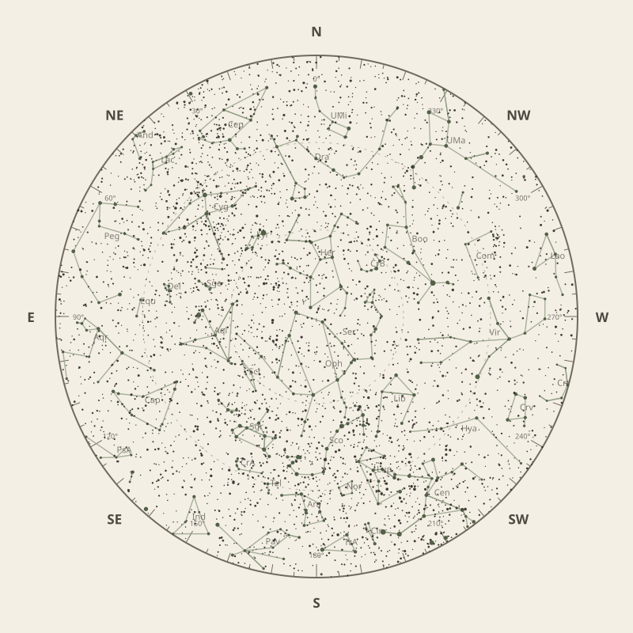

← Annual almanac


North is at the top; east is at the left. Solar System objects shown are above the horizon at 10 pm.
Monthly field almanac
July 2026
Galactic Centre viewing is best on 11 Jul 2026, from 7:18 pm to 2:58 am, reaching 50°.
- New Moon
- 15 Jul Darkest skies
- Full Moon
- 30 Jul Brightest skies
- Best dark window
- 18 Jul 10h 31m
Current conditions
Checking the sky near Malabar Coast, India…
Sky chart: 15 Jul 2026, 10 pm
Malabar Coast, India local time.
Show static monthly chart

Night planner
Choose a date to see astronomical darkness, Moon interference, Galactic Centre visibility, and planet altitudes and times.
Best low-Moon dark periods this month
- 7:17 pm–5:48 am10h 31m · 19% Moon
- 7:17 pm–5:48 am10h 31m · 11% Moon
- 7:17 pm–5:48 am10h 30m · 5% Moon
July highlights
- Milky Way
Milky Way core window
4h 00m with 50° altitude.
- Minor planets
2 Pallas
80° altitude; magnitude 9.6.
- Planets
Neptune
Best monthly date at 79° altitude.
- Occultations
HIP 95177 lunar occultation
2:57 am to 3:42 am; Moon at 45° altitude for the first listed contact.
- Planetary events
Neptune stationary point
Apparent motion changes direction.


Moon phases
100%
55%
1%
56%
99%
Low illumination favours faint targets. Bright lunar targets are best near full Moon.
Download Moon phase CSV →

Galactic Centre sessions
- 7:18 pm–2:58 am7h 40m · core to 50°
- 7:18 pm–2:58 am7h 40m · core to 50°
- 7:18 pm–2:48 am7h 30m · core to 50°


Planet visibility
Evening
- Venus11 Jul · 7:30 pm31° · Good
- Jupiter1 Jul · 7:30 pm11° · Poor
 Venus
Venus Jupiter
JupiterPredawn
- Saturn21 Jul · 5:30 am82° · Excellent
- Neptune11 Jul · 5:30 am79° · Excellent
- Uranus31 Jul · 6:00 am59° · Excellent
- Mars31 Jul · 6:00 am41° · Good
- Mercury31 Jul · 6:00 am15° · Poor
 Saturn
Saturn Neptune
Neptune Uranus
Uranus Mars
Mars Mercury
MercuryEvents
- 2 Pallas80° altitude; magnitude 9.6.
- HIP 95177 lunar occultation2:57 am to 3:42 am; Moon at 45° altitude for the first listed contact.
- Neptune stationary pointApparent motion changes direction.


Data and downloads
Positions are unavailable for 2 comet entries.
Occultation times use a smooth lunar limb; confirm grazing events with IOTA Occult 4.